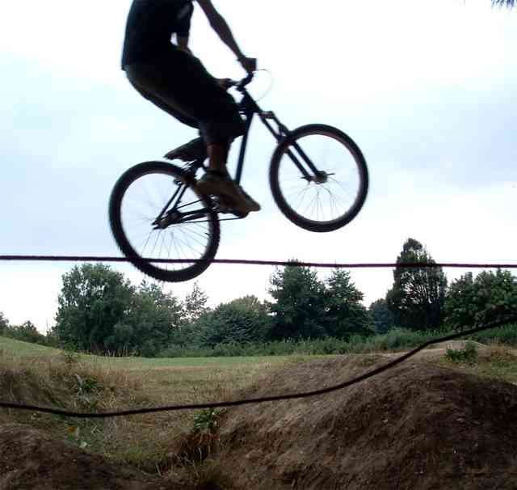
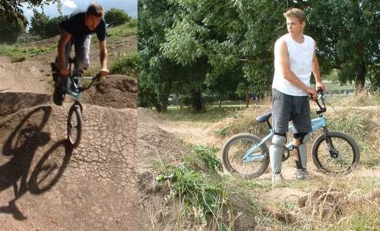
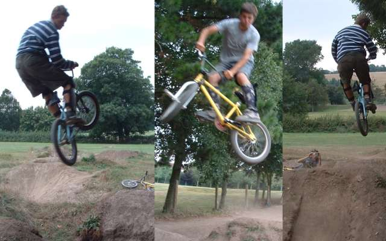
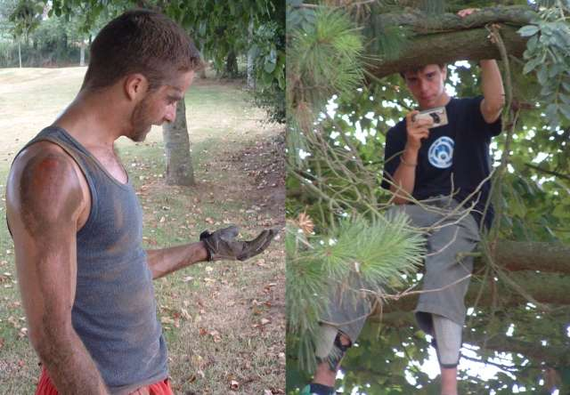
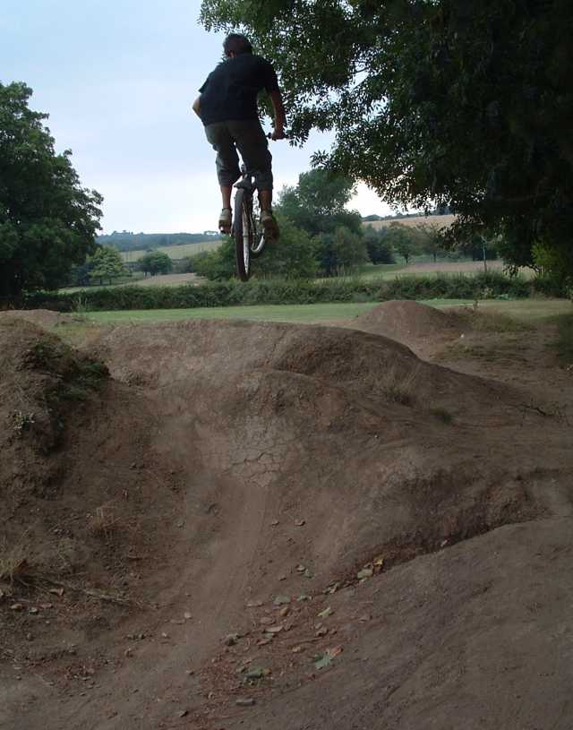

|
 when we are on holiday in devon we went to the trails in barnstable. most of the media we got was video not photo, but here a few snaps that came out ok. the trails were very dusty and in quite a bad shape, but they were a lot of fun to ride and still fairly smooth. above, seb with a kickout  i did say there weren't many pictures. i like the above ones. on the left is me on tim's bike, so mine broke. it didn't like being by the seaside i think and the freewheel and bottom bracket packed in. then i couldn't get the cranks off cos they were threaded, so i took it to the bike shop and he just got out a hammer and gave them a whack for me. bike it is a great shop.  3 kickouts on the same jump. a guy they called lurch was there one day and we helped him reshape a big lip. it throws you nice and high now, and was a lot of fun. lurch seemed to know a lot about bikes - he's been riding for ten years. he got on tim's bike and told him the top tube length and that the headset was flared. he was right too, so tim needs a new frame. another guy was there. i don't know his name but he had a cool, huge afro and a good t-shirt slogan - if you keep staring i might do a trick.  andy (on the left) came to the trails with us on one day. he's from new zealand. he's very good at surfing and has has some amazing surfing stories - ask him if you meet him. he's just getting into bmx and had never ridden trails before. when he came to the uk he bought a bmx for 40£. i think it's a proline or something. very chrome and 80's but he doesn't care! it's a super cool old school set up. anyway he got through the first few jumps great, but took a really nasty stack a bit later on which put him out for the rest of the day. whenever he wanted to go surfing he had to put on his thumb brace which he cleverly fashioned out of some old plastic. and he is the person in the easter video swinging round the pole. on the right is the unknown trails rider sitting in a tree. if you look carefully you can just catch a glimpse of green flash.  |